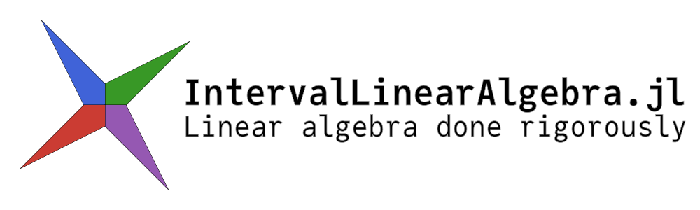
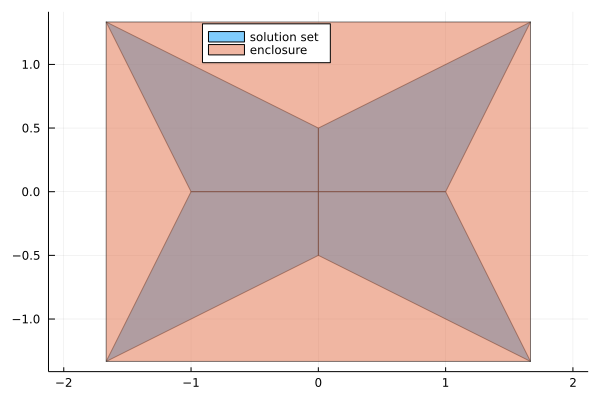

Overview
This package contains routines to perform numerical linear algebra using interval arithmetic. This can be used both for rigorous computations and uncertainty propagation.
An first overview of the package was given at JuliaCon 2021, the slides are available here.
Features
The package is still under active development and things evolve quickly (or at least should)
- enclosure of the solution of interval linear systems
- exact characterization of the solution set of interval linear systems using Oettli-Präger
- verified solution of floating point linear systems
- enclosure of eigenvalues of interval matrices
- verified computation of eigenvalues and eigenvectors of floating point matrices
Installation
Open a Julia session and enter
using Pkg; Pkg.add("IntervalLinearAlgebra")this will download the package and all the necessary dependencies for you. Next you can import the package with
using IntervalLinearAlgebraand you are ready to go.
Quickstart
using IntervalLinearAlgebra, LazySets, Plots
A = [2..4 -1..1; -1..1 2..4]
b = [-2..2, -1..1]
Xenclose = solve(A, b)
polytopes = solve(A, b, LinearOettliPrager())
plot(UnionSetArray(polytopes), ratio=1, label="solution set", legend=:top)
plot!(IntervalBox(Xenclose), label="enclosure")
Citation
If you use this package in your work, please cite it as
@software{ferranti2021interval,
author = {
Luca Feranti and
Marcelo Forets and
David P. Sanders
},
title = {IntervalLinearAlgebra.jl: linear algebra done rigorously},
month = {9},
year = {2021},
doi = {10.5281/zenodo.5363563},
url = {https://github.com/juliaintervals/IntervalLinearAlgebra.jl}
}